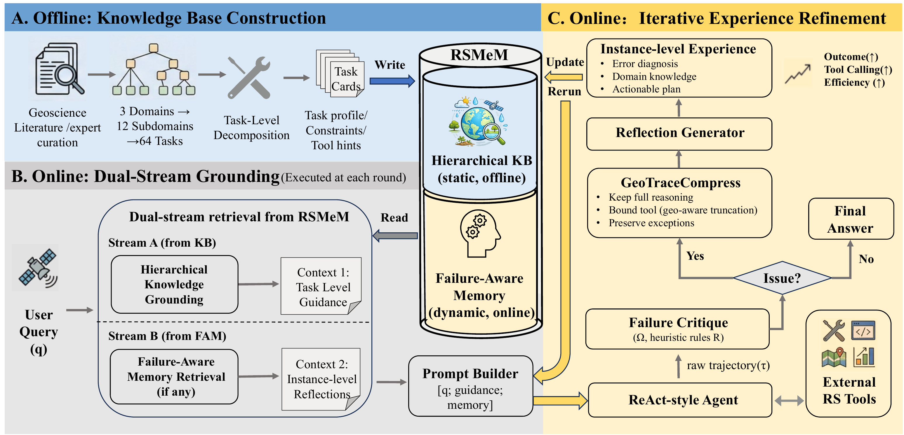

RSMeM: Knowledge-Enhanced Memory Evolution for Remote Sensing Agents with Systematic Evaluation
Remote-sensing agents should do more than call tools: they should understand
geoscience constraints, recognize when a workflow has gone wrong, and turn
previous failures into reusable experience. RSMeM closes this loop with
hierarchical domain knowledge and failure-aware memory evolution.
Why remote-sensing agents still fail
Earth-observation analysis is moving from isolated predictions toward multi-step
tool execution. Mapping drought, estimating land-surface temperature, or detecting
disaster impacts requires an agent to identify the right data, respect band and
variable semantics, select compatible tools, preserve units, inspect intermediate
products, and finish the complete workflow. A single early mistake can propagate
through every downstream step.
Existing approaches expose a trade-off. General-purpose LLM agents are flexible
but lack reusable remote-sensing knowledge. Expert workflow templates are more
reliable within their coverage, but expensive to curate and difficult to adapt.
Generic reflection can help after failure, yet a reflector without domain grounding
may diagnose the wrong cause. RSMeM addresses both missing knowledge and repeated
failure in one evolving memory system.
RSMeM in one figure

Figure 1. RSMeM workflow. An offline hierarchical knowledge base
supplies task-level guidance, while online failure-aware memory stores compact,
instance-level experience. Both streams are retrieved before the next attempt.
RSMeM evolves knowledge through three stages: build structured domain guidance,
retrieve both task knowledge and previous experience during execution, and distill
failed trajectories into actionable memory. The framework is model-agnostic and
leaves the underlying tool-using agent unchanged.
Stream A
Hierarchical Knowledge Grounding
HKG retrieves a relevant Task Card before planning. The knowledge base contains
three high-level application domains, 12 subdomains, and 64 atomic analysis
tasks. Each card combines a task definition, domain constraints, and standardized
execution guidance.
Retrieval combines semantic similarity with lexical signals from task titles,
domain keywords, and card content. This matters for specialist terms such as
TVDI and emissivity, which can be underrepresented in a general
embedding space.
Stream B
Failure-Aware Experience Refinement
FAR identifies an unreliable attempt, compresses its geospatial trace, and asks
a Reflection Generator to produce a concise diagnosis and recovery plan. The
resulting experience is stored in Failure-Aware Memory and retrieved for the
next attempt.
Unlike static guidance, this memory is instance-specific: it records what failed,
which verified work should be preserved, and what the agent should do differently
next time.
From long logs to high-density experience
Remote-sensing trajectories often contain long file lists, metadata dictionaries,
paths, and repeated tool outputs. Feeding the entire log back to a reflector is
costly and can obscure the decisive error. GeoTraceCompress
therefore applies type-aware compression: long lists keep their first three and
last two items, dictionaries retain representative key-value pairs, and error
messages receive a larger budget. Key reasoning and failure signals remain visible.
1CritiqueLocate a material issue
2CompressKeep evidence, remove I/O noise
3ReflectDiagnose and propose a local repair
4RememberWrite the repair into FAM
5RetryReplan with HKG + experience
The objective is not to accumulate ever-longer context. It is to transform a noisy
execution history into compact procedural knowledge that an agent can actually use.
Systematic evaluation on EarthBench
RSMeM is evaluated on all 248 expert-annotated EarthBench questions, covering RGB
imagery, spectral data, and Earth products. Experiments use DeepSeek-V3.2, Kimi-K2,
Qwen3-32B, and Qwen3-8B with EarthAgent as the base tool-using system. Ground-truth
answers and reference tool steps are used only for evaluation and are never exposed
to the acting model.
Tool useorder, identity, exact matching, and workflow-prefix correctness
Outcomeend-to-end answer accuracy
Efficiencytrajectory redundancy, token cost, and experience density
What the results show
Consistent gains across model scales. DeepSeek-V3.2 improves from
51.82% to 57.89% outcome accuracy. Kimi-K2, Qwen3-32B, and Qwen3-8B also gain
approximately 5.7, 3.6, and 2.8 percentage points.
Improvement comes from dense experience, not longer trajectories.
Reflection accounts for only 0.35% of the total inference-token budget, while
trajectory redundancy remains close to 1.0.
HKG and FAR are complementary. HKG primarily strengthens global
planning; FAR improves robustness after execution failures. The full system
continues improving when either component alone begins to plateau.
Structured domain knowledge matters. RSMeM substantially
outperforms generic retrieval alternatives, with especially strong gains in
standardized multi-step applications such as disaster management.
Case study: learning that BT10 is not LST
One EarthBench task asks how many of 15 Landsat 8 dates over Death Valley have more
than half of the study area above 315 K in LST. During the first attempt, the agent
calls a nonexistent tool, calculates LST for only part of the time series, and then
drifts from the requested LST variable back to BT10. The workflow never reaches a
consistent final answer.
RSMeM preserves the valid observations but distills a precise correction: do not
threshold BT10 as if it were LST; run the single-channel LST inversion for all 15
dates using the red and near-infrared bands to estimate emissivity, then apply the
same threshold statistic to the complete LST series. With this experience retrieved,
the next attempt completes the workflow and returns the correct answer: five days.
HKG explains the governing remote-sensing principle; FAR explains how this particular
execution violated it. Together they convert task-level knowledge into an
instance-level recovery plan.
Try RSMeM in the ModelScope Studio
The public Studio turns the paper's core loop into an inspectable CPU-based workflow.
It includes 13 EarthBench examples spanning drought, wildfire, temperature, thermal
inertia, nighttime lights, vegetation, water quality, rainfall, fire radiative power,
and urban change. You can also upload your own GeoTIFF files.
Choose data. Select a bundled case or upload your own GeoTIFFs.
Connect a model. Enter a public OpenAI-compatible Base URL, model name, and your own API key. Credentials are request-scoped and are not stored.
Run the agent. Inspect the retrieved Task Cards, model-authored plan, real CPU tool calls, observations, and derived GeoTIFF artifacts.
Review the result. Bundled cases can be checked against their known answers. For uploaded data, a no-ground-truth LLM gate provides an evidence-based recommendation, while you make the final decision.
Refine when needed. Compare reflection candidates derived from compressed, full, and LLM-summarized trajectories—or write your own correction—then confirm the experience used for the next attempt.
The repository includes the experiment configuration, memory strategies, evaluation
pipeline, knowledge resources, and tool interfaces needed to reproduce and extend
the work. We welcome issues, new geoscience tasks, and contributions from the remote-
sensing and agent communities.